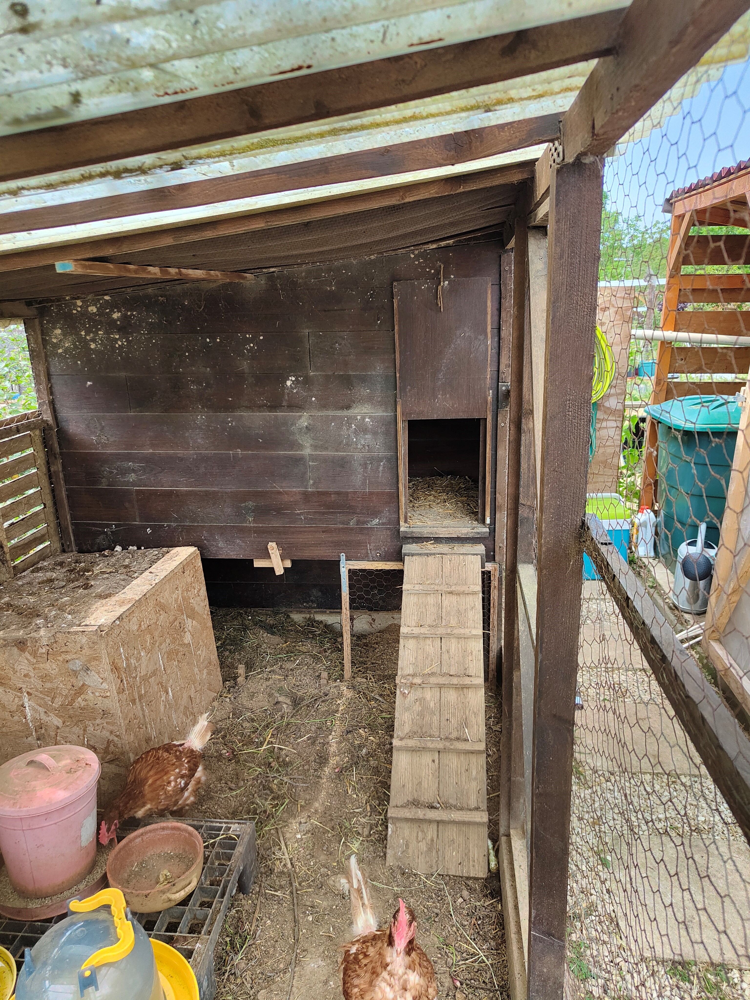
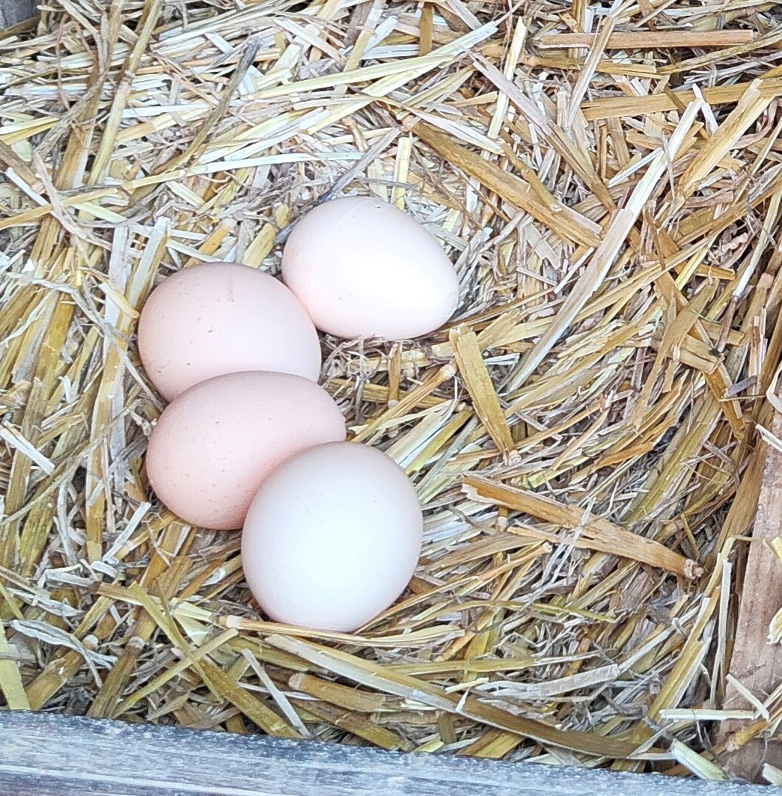
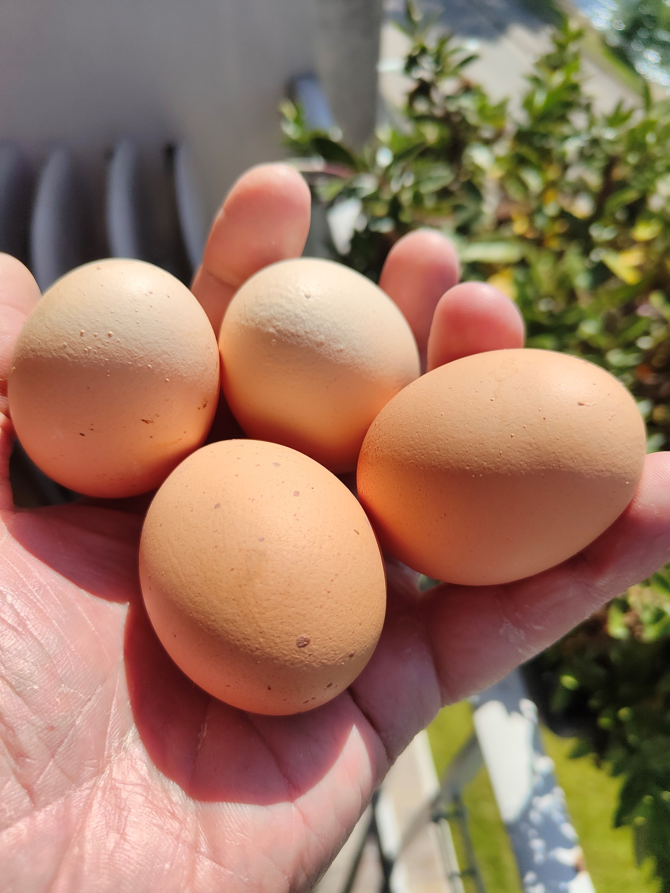

les chantiers qui nous rassemblent: Mutualisé nos forces et nos ressources Echanger des bons plans et des idées. Fabrication d’engrais biologique et naturel. Chantier composte maraîcher 9m3, nécessitant 3 voyages de camions, 6 jardiniers. Chantier bottes de pailles: 40 bottes de pailles, 12 jardiniers. Produit localement par Pascal éleveur d’autruches Thorignien. Chantier broyat de bois frais, 25 m3, 14 jardiniers avec la participation d’Audrey présidente de l’association qui vient en aide à des malades et qui a pris ses quartiers dans l’ancien verger partagé. Chantier plants de légume: Débuté en février jusque juin, plus de 800 plants de légumes 10 espèces; 26 variétés. Grace à la création d’une serre chauffée. Fournis gratuitement aux adhérents.
Sauver de l’élevages industriel La poule « de réforme » provient d’élevage en batterie. Le plus souvent enfermé de la naissance à la mort elle n’est destinée qu’a pondre. Puis envoyée à l’abattoir à 16 mois environ.  2 poulaillers en 2023 Mutualiser nos moyens : Plusieurs jardiniers se partagent les 2 poulaillers et achats groupé de matériels et de nourriture.  Une précieuse contribution Animal sympathique adoré des enfants et des plus vieux. Les poules dévorent limaces, larves et escargots. Elle nous offre des œufs et un fumiers de très haute qualité pour le potager  Oeufs frais Les œufs frais sont un aliment de choix. Ils sont riches en protéines, vitamines et minéraux. Ils sont également une source de graisses saines.